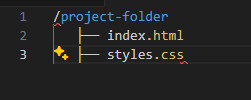

<h1> heading to dark blue, and the color of the <p> paragraph text to dark green. Example:
<link rel="stylesheet" href="styles.css" type="text/css">
In your "styles.css", define styles like:
body {
background-color: lightblue;
}
h1 {
color: darkblue;
}
p {
color: darkgreen;
}
First, set up your project folder with an HTML file and a CSS file. Here’s an example of how your directory should look:
In your HTML file (e.g., index.html), include the following code to link to the external CSS file:
In your CSS file (e.g., styles.css), define the styles that will apply to your webpage:

After completing these steps, your webpage will have a light blue background.
To apply JavaScript to HTML, you can use the following methods: